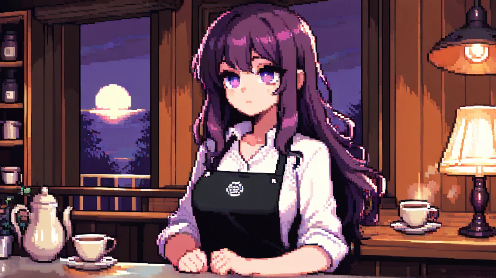
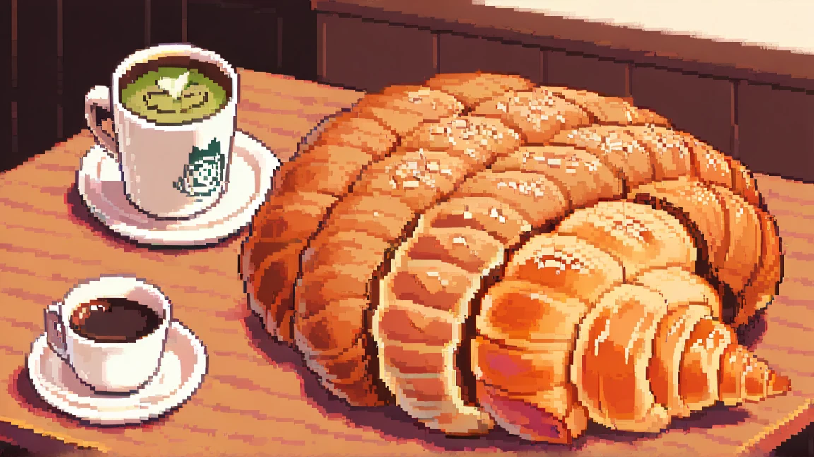
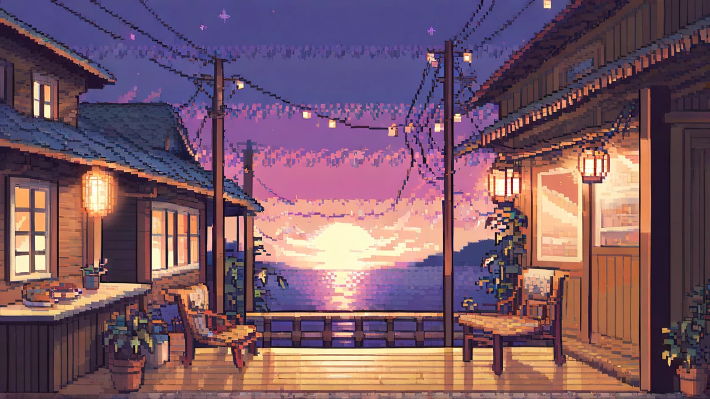
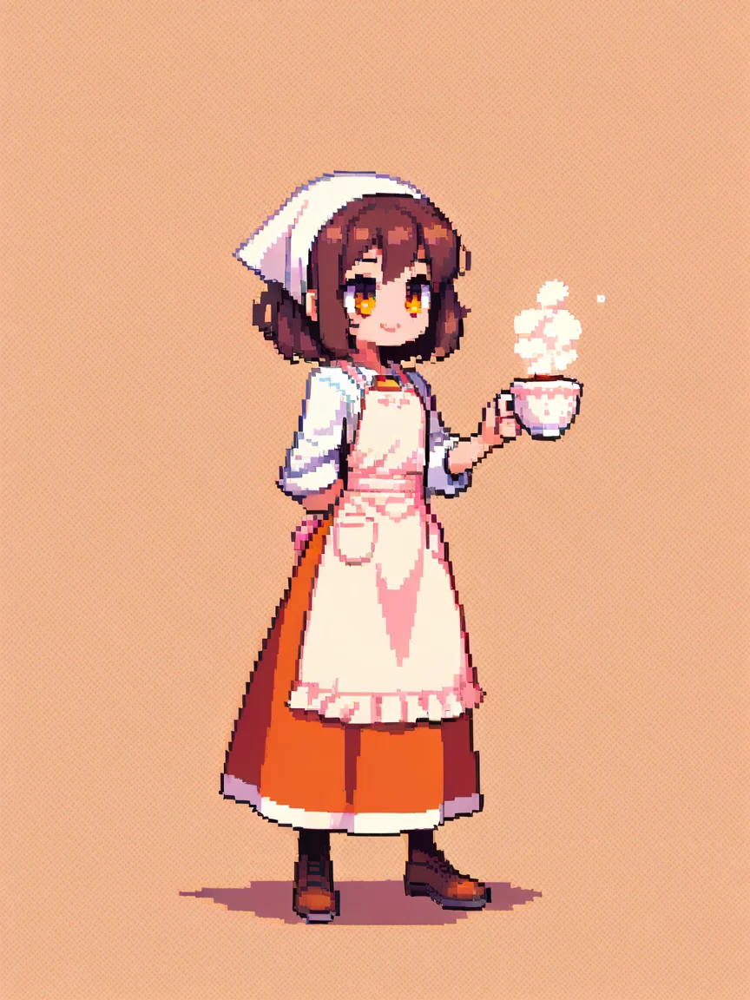
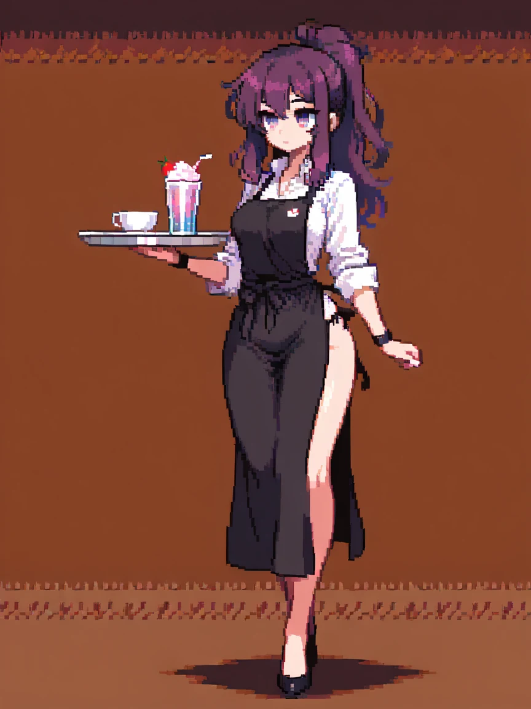
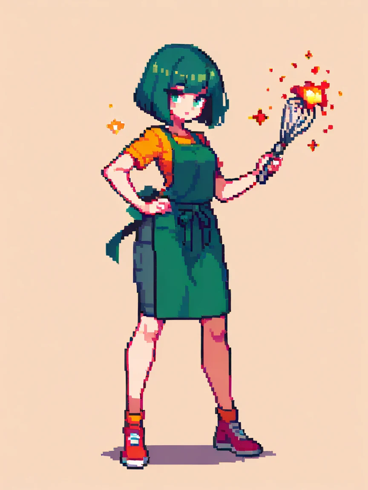
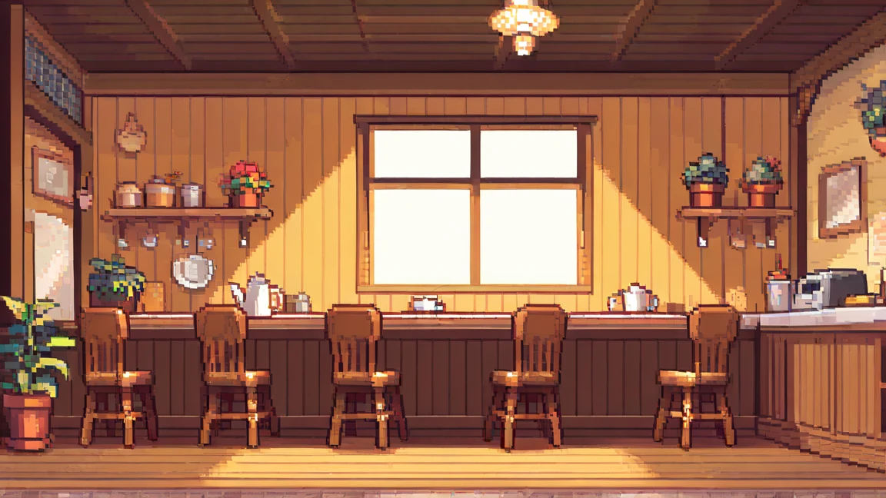
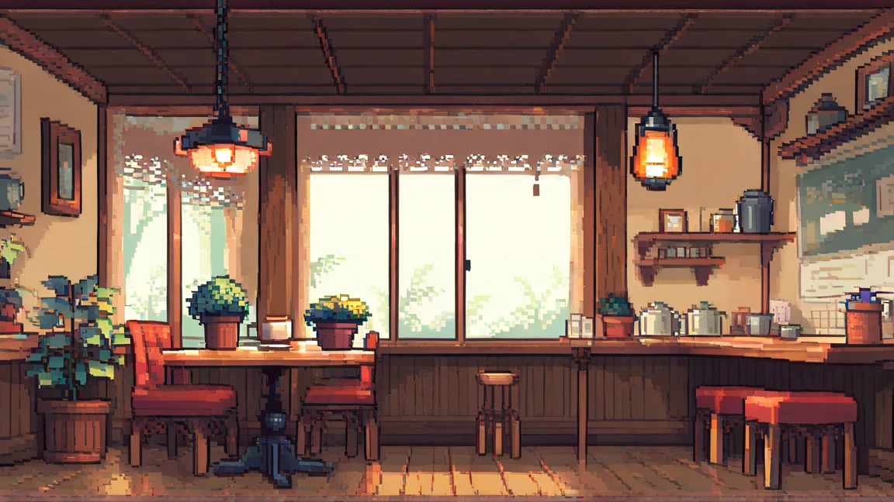

24 OCT 2026
Temporada Otoño: menú de calabaza y nuevos pedidos
Tres recetas de temporada, un cliente misterioso y un bonus de propinas por combo perfecto.
Acceso anticipado
En itch.io publicamos la build de pruebas: llega antes que Google Play y puede tener bugs. La versión estable y soportada es la de Play Store.
¿Preferís la versión estable? Jugar en Google Play
24 OCT 2026
Tres recetas de temporada, un cliente misterioso y un bonus de propinas por combo perfecto.

18 OCT 2026
Turno noche desbloqueado. Camille llega con una habilidad pasiva de enfriado y dos capítulos de historia.

10 OCT 2026
Las cascadas ahora se telegrafían por ola. Ajustes de dificultad y una pista nueva para pedidos imposibles.

Evento destacado
Del 15 de octubre al 1 de noviembre la cafetería abre de noche. Sirve pedidos a clientes somnolientos, desbloquea la receta secreta y consigue el delantal edición limitada.

Espresso · Turno mañana
Rápida, directa y adicta al primer café del día. Su habilidad acelera la barra.

Nocturna · Turno noche
Silenciosa y precisa. Mantiene los pedidos frescos más tiempo mientras la cafetería duerme.

Matcha · Turno tarde
Optimista y torpe. Sus combos dan propinas extra si no se le quema nada.


Reporta un bug, pide una recuperación de progreso o cuéntanos qué receta falta.